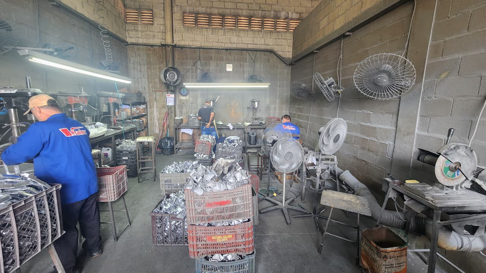
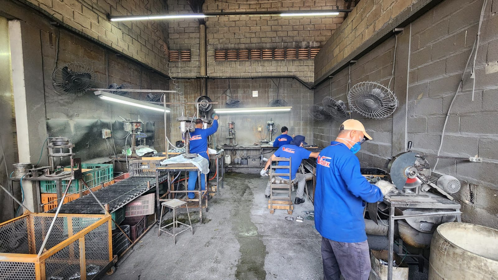

Projetos
Monitoramento de Macronutrientes NPK + Irrigação Automática
Sistema baseado em ESP32 com sensor NPK-S e umidade capacitiva, com acionamento automático de bomba de água via Blynk.
Ver código no GitHub | Ver vídeo de demonstração
Este projeto foi desenvolvido utilizando um microcontrolador ESP32, integrando sensores para análise de nutrientes NPK no solo e umidade. O sistema aciona automaticamente uma bomba d’água quando necessário. Utiliza comunicação RS485 para o sensor NPK-S e exibe dados no Blynk com gráficos em tempo real.

Estação de Monitoramento de Solo com Gráficos em Tempo Real
Protótipo de estação conectada ao Blynk para exibir dados de sensores ambientais em tempo real.
Este sistema coleta dados de temperatura, umidade do solo e umidade do ar, transmitindo-os para o aplicativo Blynk. O usuário pode visualizar gráficos e históricos de dados e configurar alertas automáticos.

projeto de melhoria
Melhoria em setor, visando aumento de produtividade
Este projeto foi desenvolvido em um setor chave na indústria, responsável pela fabricação do produto carro-chefe da empresa. Apesar de sua importância estratégica, o setor apresentava sérios problemas: atrasos constantes na entrega, retrabalhos frequentes e perda de qualidade, tornando-se o principal gargalo da produção.
Atuei no desenvolvimento do arranjo fisico, auxilio na coleta de dados e na aplicação de metodologias que visavam o melhor desempenho e aumento da qualidade, com o objetivo de mudar o futuro do setor.

A imagem acima mostra o setor antes das mudanças. Podemos notar a organização "caotica", um dos pontos mais significativos, pois impactava na fluidez da produção.

O resultado foi notável: já nos primeiros testes observou-se um aumento de 50% na produção no primeiro mês, além da redução de retrabalhos e maior previsibilidade nos prazos de entrega. Esse case reforça minha capacidade de aplicar conceitos de melhoria contínua e metodologias de excelência para gerar impacto real dentro de processos industriais.
Durante a concepção desse projeto, eu estava fazendo meu curso de Yellow e Green belt, o que foi de grande ajuda para poder me situar e me posicionar da melhor forma possível sobre pontos chaves que foram de grande ajuda para o andamento do projeto.